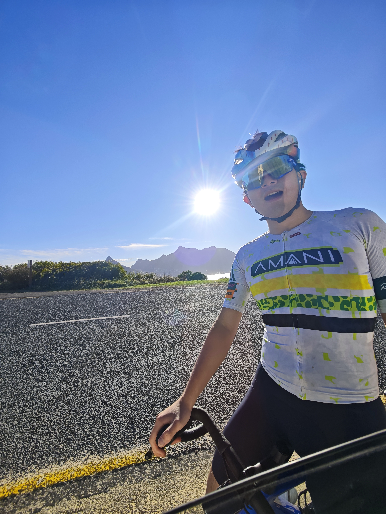

CICC Wealth Management Co., Ltd.
Investment Manager Assistant
Investment due diligence, embodied-intelligence research and investor education.
Singapore Institute of Management · University of London
I study at the Singapore Institute of Management on the University of London programme, with academic direction from the London School of Economics and Political Science. I expect to graduate in 2027.
My interests are in quantitative investment research, financial markets and data. My work includes market-data pipelines, factor research, backtesting and industry research.
I am building veibaequant.cn to bring these projects together, from ETF options and A-share strategies to market sentiment and report-based factor discovery.
Outside research, I enjoy cycling, triathlon and aquathlon.

cycling at chapman's peak, photo by F.
BSc (Hons) in Data Science and Business Analytics
Academic direction: London School of Economics and Political Science.
Python, R, SQL · Pandas, NumPy
QMT, API integration, backtesting, factor research
Git, GitHub, LaTeX
Investment Manager Assistant
Investment due diligence, embodied-intelligence research and investor education.
Investment Intern
Python/QMT interfaces, factor strategies and risk-document reviews.
Quantitative Research Intern
A-share data pipelines, price-volume factors and research-report analysis.
Industry Research Intern
PCB value-chain research and listed-company comparisons.
Implemented a random-walk Metropolis algorithm in Python and R to sample from a Laplace distribution, and assessed chain convergence using the R-hat diagnostic.